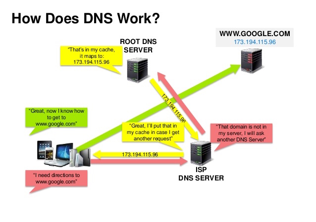
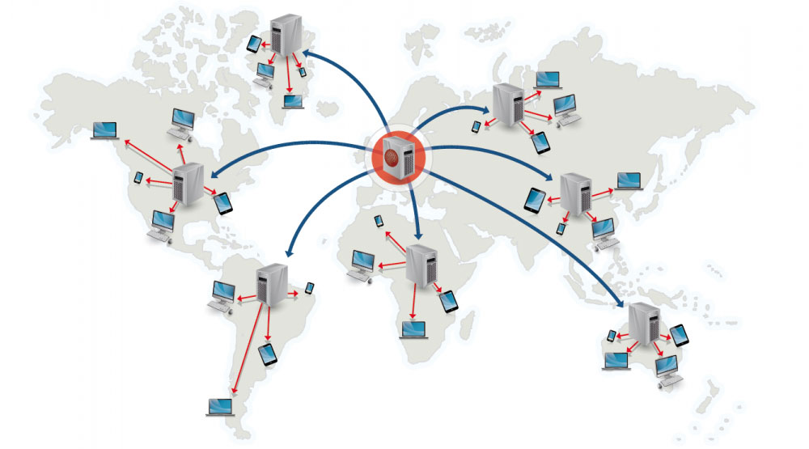

04 The System Design Primer — Study Path
Before a request ever reaches your servers, two things happen: a name gets turned into an address, and — if you're lucky — the content never has to travel that far in the first place.

A Domain Name System (DNS) translates a domain name such as www.example.com to an IP address.
DNS is hierarchical, with a few authoritative servers at the top level. Your router or ISP tells you which DNS server(s) to contact for a lookup. Lower-level DNS servers cache mappings, which can go stale due to propagation delays. Your browser or OS also caches DNS results for a while, controlled by the record's time to live (TTL).
Services such as CloudFlare and Route 53 provide managed DNS. Some DNS services can route traffic through several methods:

A content delivery network (CDN) is a globally distributed network of proxy servers that serve content from locations closer to the user. Generally, static files — HTML/CSS/JS, photos, videos — are served from a CDN, though some, like Amazon CloudFront, also support dynamic content. The site's DNS resolution tells clients which server to contact.
Serving content from a CDN improves performance in two ways: users get content from data centers close to them, and your own servers don't have to serve the requests the CDN fulfills instead.
You push new content to the CDN whenever it changes on your server — uploading directly and rewriting URLs to point at the CDN. You control expiry and update timing. Content uploads only when new or changed, which minimizes traffic but maximizes storage. Works well for low-traffic sites or content that rarely changes.
The CDN grabs new content from your server the first time a user requests it, so the very first request is slower until it's cached. A TTL determines how long content stays cached. This minimizes CDN storage but can create redundant traffic if content expires and gets re-pulled before it actually changed. Works well for high-traffic sites.